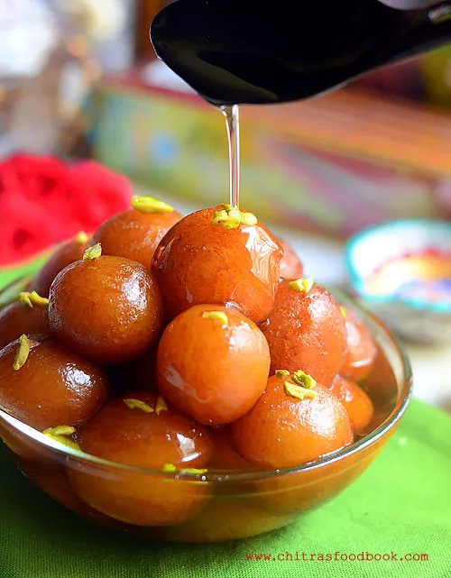
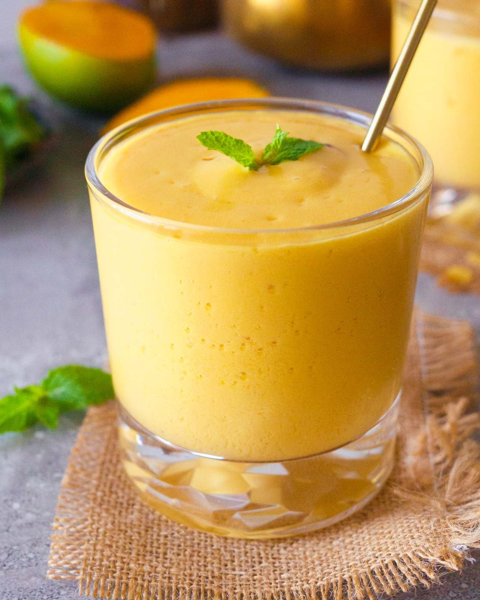

LILLY's Kitchen
Hello Everyone. This is V. Lilly Grace Dorucs.
Today I am going to share my recipes.

The recipes I'm sharing with you are:
Recipe 1: Chicken Fry

List of products:
- Chicken 500gms (boneless)
- Ginger Garlic Paste
- Indian Masalas
- Rice Flour and All-Purpose Flour
- Oil
- Salt & Lemon Juice
| Sno | Product Name | Quantity |
|---|---|---|
| 1 | Garam Masala | 3 tbsp |
| 2 | Chilli Powder | 2 tbsp |
| 3 | Coriander Powder | 2 tbsp |
| 4 | Curd | 4 tbsp |
| 5 | Turmeric Powder | 2 tbsp |
After making this marination mixture, add salt for taste and squeeze lemon juice (no seeds).
Procedure:
- Take garlic, ginger, and curry leaves in a blender.
- Grind to a coarse puree without adding water.
- Mix all masalas, salt, and puree in a bowl.
- Add lemon juice, all-purpose flour, and rice flour. Mix well.
- Add water to make a thick paste. Add chicken cubes and mix well.
- Marinate for 1-2 hours.
- Deep fry chicken cubes in hot oil until golden brown.
- Drain and serve with onions.
Here is the video explanation:
This is how I make my Chicken Fry. Hope you liked it!
Recipe 2: Gulab Jamun

Essentials Needed:
| Sno | Ingredients |
|---|---|
| 1 | Gulab Jamun Powder |
| 2 | Sugar (1kg) |
| 3 | Elachi |
| 4 | Oil |
| 5 | Ghee |
Preparation:
- Mix Gulab Jamun powder with water to form a dough.
- Shape dough into balls.
- Boil water and sugar until golden brown syrup forms.
- Deep fry balls in hot oil until golden brown.
- Add fried balls to sugar syrup and refrigerate.
Here is the video explanation:
This is how to make Gulab Jamun at home.
Recipe 3: Mango Lassi

Mango Lassi is a delicious, cooling, and refreshing beverage that helps digestion and corrects liver and eyesight issues.
Ingredients:
| Sno | Items |
|---|---|
| 1 | 2 cups homemade yogurt |
| 2 | 2 medium ripe mangoes |
| 3 | 3 Tbsp maple syrup or honey |
| 4 | 6 Ice Cubes |
| 5 | 1/8 tsp rose water |
| 6 | Cinnamon Powder |
Preparation:
- Refrigerate mangoes for 15-30 mins, peel and slice.
- Blend yogurt, mango slices, maple syrup, and ice cubes until smooth.
- Add rose water and blend again.
- Pour into a glass and sprinkle cinnamon powder on top.